QC001 · Остання зупинка

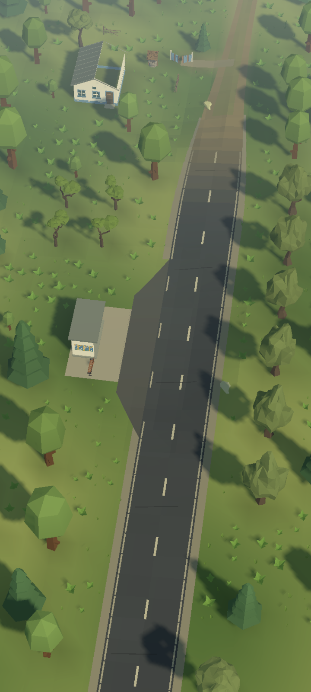

Пагорби заходять у видиму зону, дорога лежить на дні долини, до річки спускається низька заплава. Тепле бокове сонце й прохолодне світло неба підкреслюють грані дерев і будівель; дальній план поступово пом’якшується імлою.
Ті самі авторські camera anchors, FOV і віддалення. Висота фокуса слідує новому рельєфу. «До» — native capture 18:43:32 UTC; «після» — 20:24:48 UTC 10.10.2026. Вода анімована.

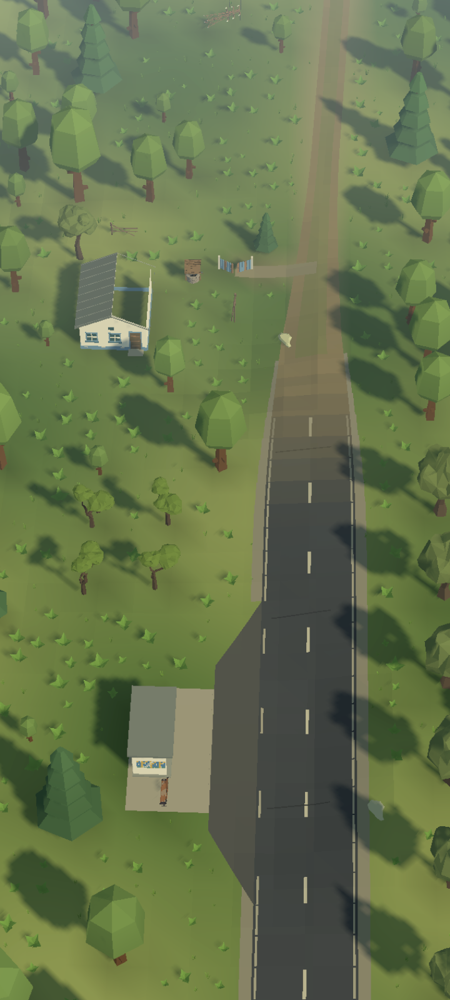
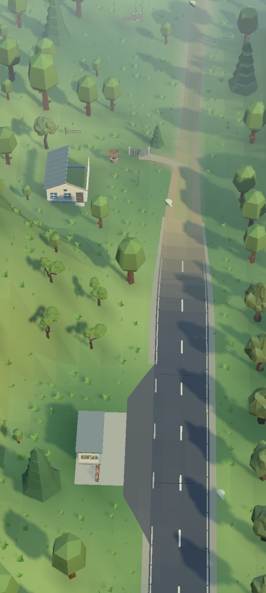
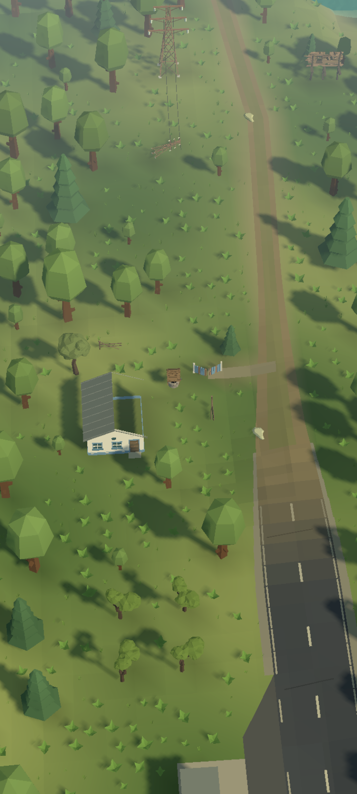
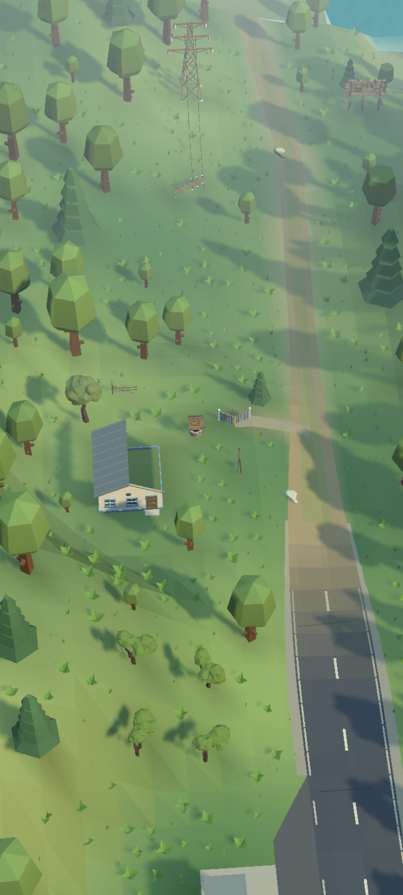
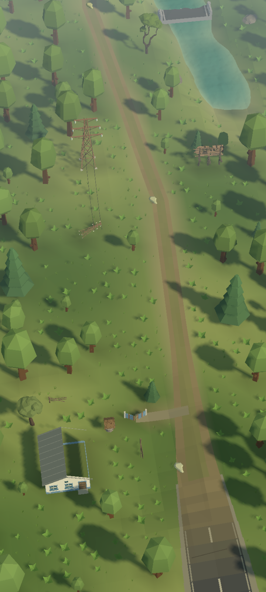
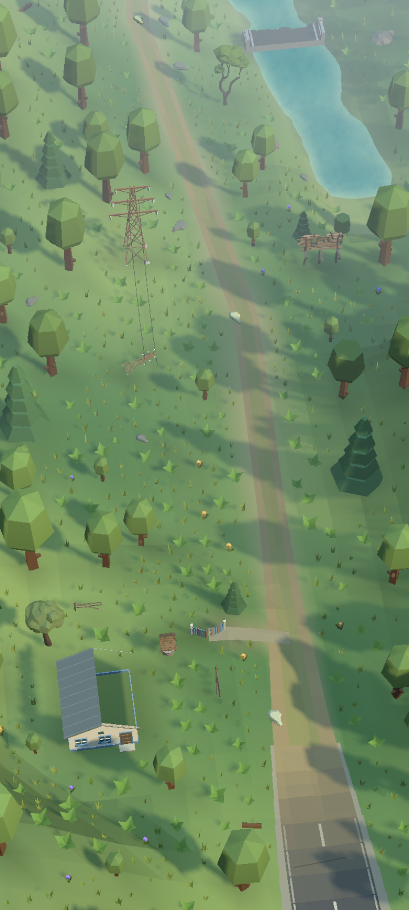
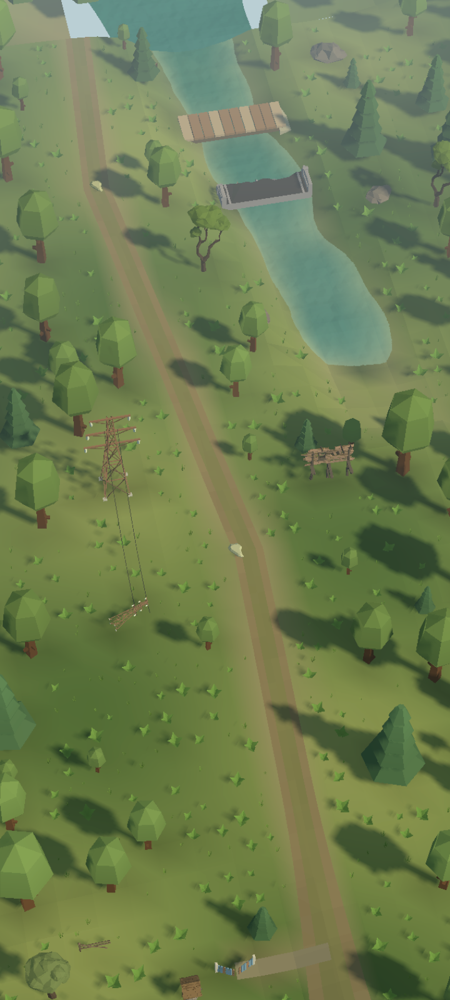
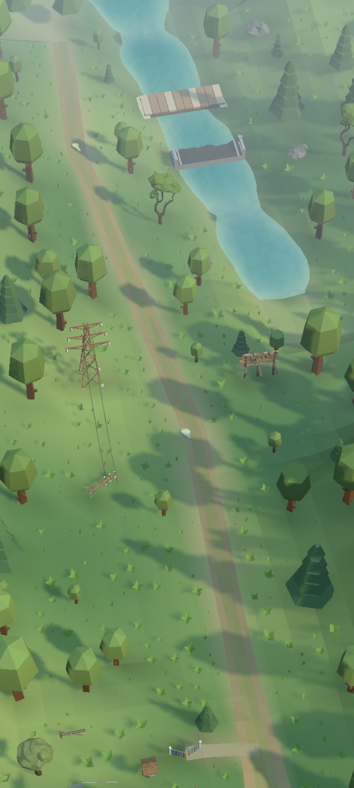
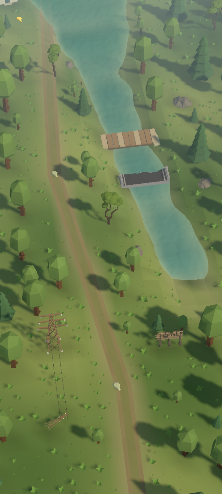
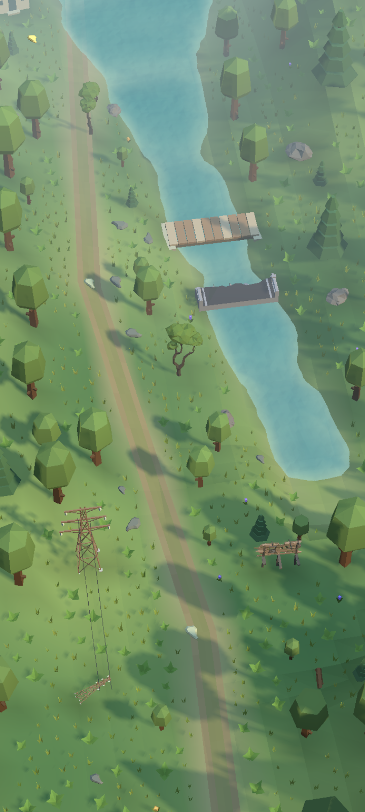
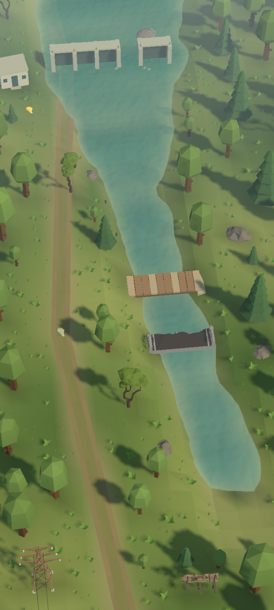
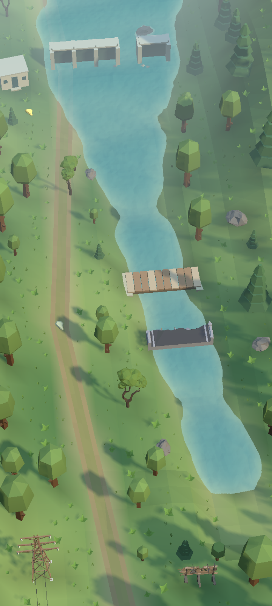
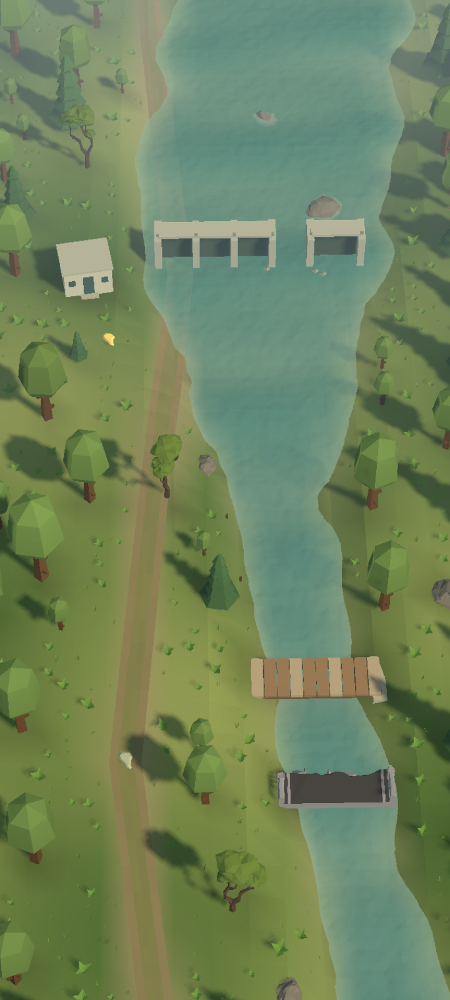
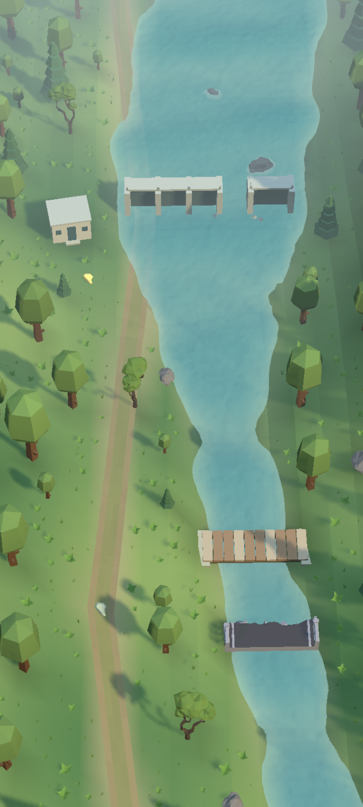
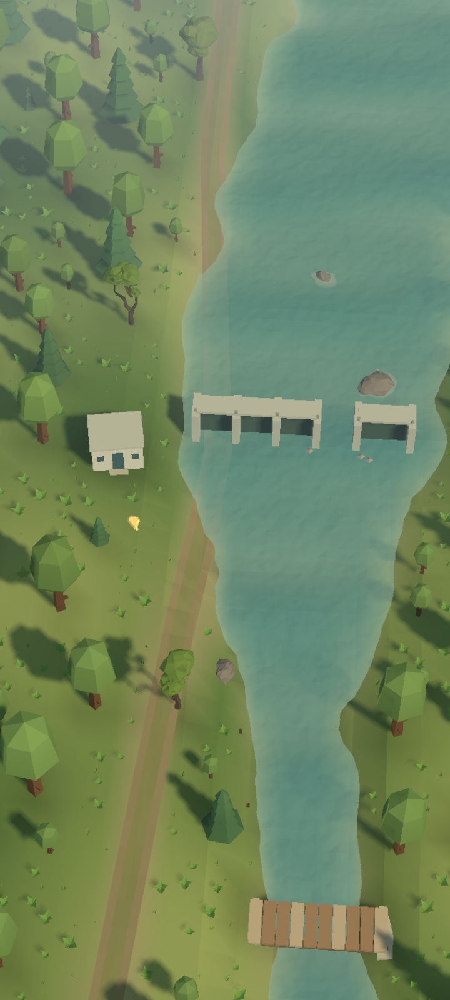
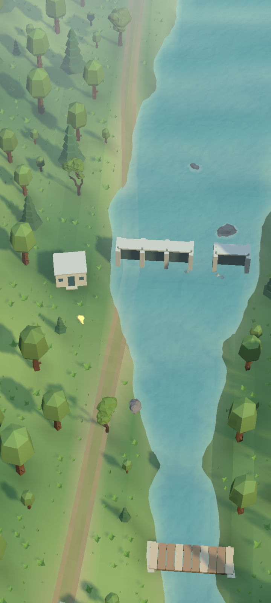
Production URP, ізольований Editor. Галерея показує художні зміни; виміри телефону не проводились.